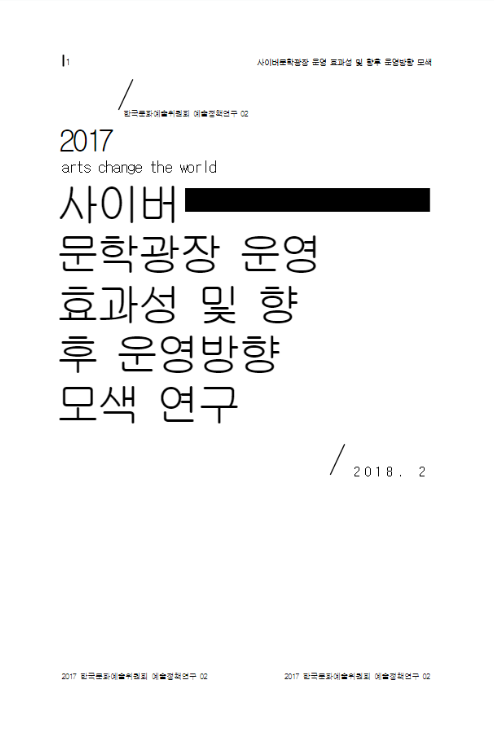

사이버문학광장 운영 효과성 및 향후 운영 방향 모색 연구
- 등록일2022-05-26
- 좋아요2231
- 조회수21
- 구분2017년 정책연구 추진결과
- 발간년도2018
- 수행기간2017.9.20.~11.30. / 3개월
- 분류-
- 연구책임자박석희
- 총연구비(천원)25,900천원

-
과제내용
[과제내용] 사이버문학광장의 운영 효과, 향후 운영방향 모색 및 효과적 사업운영을 위한 정책적 제언
제1장 서론
제2장 사이버문학광장 운영현황 분석 및 선행연구 검토
제3장 심층면접 등을 통한 운영성과 분석
제4장 서베이 조사를 통한 운영성과 및 인지도 분석
제5장 사이버문학광장의 향후 운영방안
[부록] 설문지 등